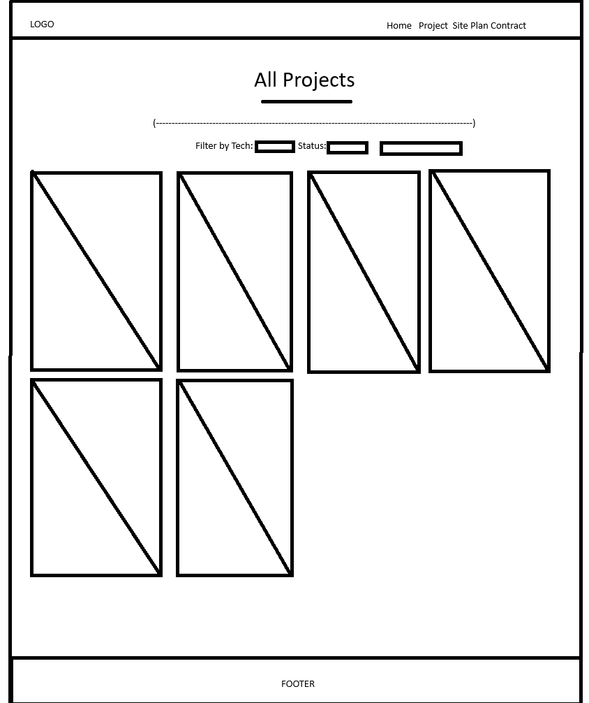

AS Portfolio - Site Plan
By Alex Sisson
Purpose and Audience
The purpose of this site is to showcase my personal projects, skills, and experiences in web development. It provides an interactive portfolio experience highlighting my coding abilities and creativity.
The intended audience includes potential employers, collaborators, instructors, and anyone interested in learning about my work as a developer.
Dynamic Elements
- Interactive project gallery where clicking thumbnails opens a detailed viewer.
- Contact form with input validation before submission.
- Conditional messages for project statuses (in progress or completed).
- Use of arrays and objects to store and display project data dynamically.
Logo
Logo: Simple text-based design using the initials "AS" created with Canva. It represents my personal brand and appears in the navigation bar on every page.
Colors and Fonts
| Color Name | Preview | Hex |
|---|---|---|
| Primary | #396e94 | |
| Secondary | #e7c24f | |
| Accent 1 | #a42212 | |
| Accent 2 | #ffffff |
Heading Font: IM Fell French Canon SC
Paragraph Font: Lato
Content
Home Page
- Introduction: “Hi, I'm Alex, a web developer passionate about creating interactive web experiences.”
- About Me section describing my background and passion for web design.
- What I Do section showing my key strengths (Web Design, Development, UX).
- Featured Projects grid with images, descriptions, and status labels.
- Contact Form for visitors to send messages.
Child Page (Projects)
- Displays detailed project descriptions, screenshots, and technologies used.
- Filter and search options to sort projects by technology or completion status.
- Clickable images that open in a pop-up viewer.
Contact Section
- Simple form requesting name, email, and message.
- Validation ensures fields are completed before submission.
Wireframes
The following describes the visual layout of each main page.
Home Page
Header (Logo + Nav) → Hero Section → About Me → What I Do → Featured Projects → Contact → Footer
Child Page (Projects)
Header (Logo + Nav) → Filter/Search Controls → Project Grid → Footer
